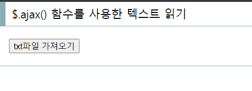
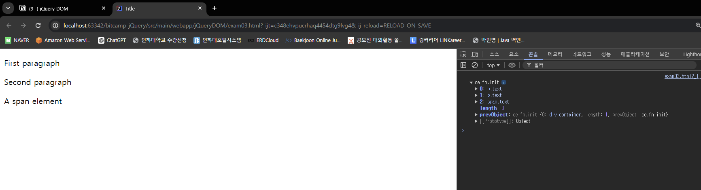
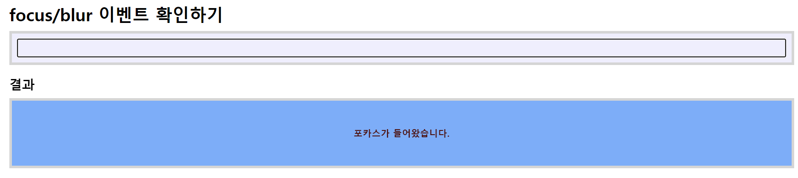
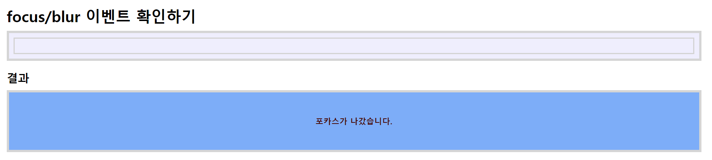
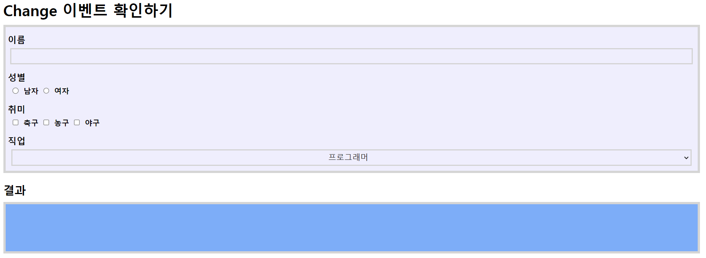
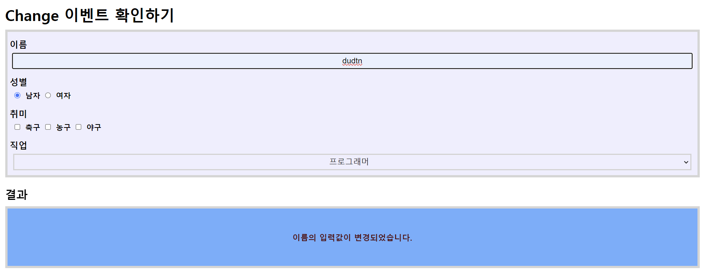
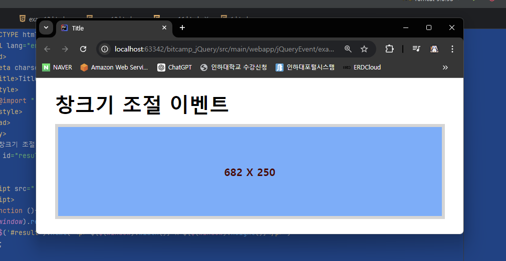
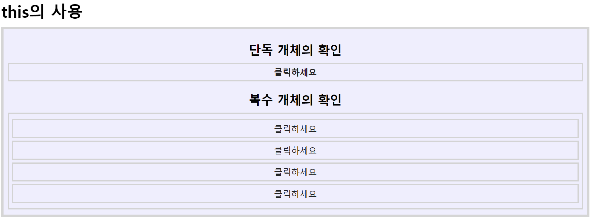

전 세계에서 가장 많이 사용되는 javascript 라이브러리다.
- HTML 요소 제어
- 손쉬운 이벤트 철리
- 요소의 탐색과 생성
- Ajax 통신처리
- 페이지 이동이 없는 비동기 데이터 통신
특징
- 크로스 브라우징
- 한 번의 코딩으로 거의 모든 브라우저에게 적용된다.
- 간결한 문법
- HTML 태그를 제어하거나 이벤트를 처리하는 부분 등 javascript의 전반에 걸쳐서 구문이 짧아지기 때문에 개발 효율성이 높아진다
- 익숙한 구문
- CSS에서 사용하던 속성과 값을 그대로 javascript 구문에 적용할 수 있어서 document 내장 객체가 제공하는 기능을 쉽게 사용 가능
- 다양한 플러그인
- jQuery를 기반으로 하는 수 많은 플러그인들이 무료로 배포되고 있기 때문에, 갤러리, 메뉴 등의 구현에 대한 작업이 많이 단축된다.
- 마무리는 무조건
;로 해줘야 한다.
jQuery 참조하기
① js 파일을 다운 받아서 사용 <script type="text/javascript" src="js/jquery-3.7.1.min.js"></script>
② http://code.jquery.com의 CDN 서��스를 사용 <script type="text/javascript" src="http://code.jquery.com/jquery-3.7.1.min.js"></script>
③ http://code.jquery.com의 CDN 서비스를 버전 명시 없이 사용 <script type="text/javascript" src="http://code.jquery.com/jquery.min.js"></script>
- CDN이란?
- 지리,물리적으로 떨어져 있는 사용자에게 컨텐츠를 더 빠르게 제공할 수 있는 기술
- 느린 응답속도 / 다운로딩 타임 을 극복하기 위한 기술

- CDN을 사용함으로써 서버의 트래픽 부하 및 비용을 줄이고 사용자에게 빠른 서비스 제공도 가능하다. 장애 확률도 낮춰 줄 수 있다.
jQuery() 함수 사용
- Javascript는 window 객체의 addEventListener() 함수와 attachEvent() 함수를 사용하여
onload이벤트를 처리해야 한다. - 이때 크로스 브라우징 처리를 하기 위해 if문으로 브라우저를 구별하는 분기문을 작성해야만 한다.
- jQuery는 이러한 번거로움을 jQuery() 함수 하나로 해결할 수 있게 해준다.
- 안에 id값 집어넣는 경우
var element = jQuery('#myElement'); // id가 'myElement'인 요소 선택document.querySelector나document.getElementById역할
- 안에 함수를 집어넣는 경우
<!DOCTYPE html> <html lang="en"> <head> <meta charset="UTF-8"> <title>Title</title> </head> <body> <h1 id="hello"></h1> <script src="../js/jquery-3.7.1.min.js"></script> <script> function hello($){ var h1 = jQuery('#hello') // => var h1 = document.getElementById('hello') h1.html('Hello jQuery') // => h1.innerHTML = 'Hello jQuery' h1.text('Hello jQuery') // => h1.innerText = 'Hello jQuery' } jQuery(hello) </script> </body> </html>onload처리됨
$ 객체의 사용
- jQuery() 함수로부터 전달되는 파라미터 받기
$는 jQuery의 모든 기능을 담고 있는 객체이자 함수이다.- 형식
function ex($) { $ 객체 사용 } jQuery(ex); - 예시 코드
- 객체 담기
<!DOCTYPE html> <html lang="en"> <head> <meta charset="UTF-8"> <title>Title</title> </head> <body> <h1 id="hello"></h1> <script src="../js/jquery-3.7.1.min.js"></script> <script> jQuery(function ($/*java의 오브젝트처럼 받아줌*/){ // 익명함수 var h1 = $('#hello') // => var h1 = document.getElementById('hello') h1.html('Hello jQuery') // => h1.innerHTML = 'Hello jQuery' h1.text('Hello jQuery') // => h1.innerText = 'Hello jQuery }) </script> </body> </html> - 함수 담기
<!DOCTYPE html> <html lang="en"> <head> <meta charset="UTF-8"> <title>Title</title> </head> <body> <h1 id="hello"></h1> <p id="text">안녕하세요 제이쿼리!!</p> <script src="../js/jquery-3.7.1.min.js"></script> <script> $(function (){ var h1 = $('#hello') h1.css('color', 'red') h1.html('Hello jQuery') h1.text('Hello jQuery') // => h1 태그에 값을 넣는다. alert($('#text').text()) // h1 태그에 값을 꺼내온다. }) </script> </body> </html>
- 객체 담기
HTML 요소 획득하기
var h1 = document.getElementById("hello");
=> var h1 = $("#hello")
예) var mytag = $("h1"); // h1 태그 객체 획득하기
예) var mytag = $(".hello"); // "hello" 라는 class 속성값을 갖는 요소의 객체 획득하기
예) var mytag = $("#hello"); // "hello" 라는 id 속성값을 갖는 요소의 객체 획득하기innerHTML & innerText의 간결화
var h1 = $('#hello') // => var h1 = document.getElementById('hello')
h1.html('Hello jQuery') // => h1.innerHTML = 'Hello jQuery'
h1.text('Hello jQuery') // => h1.innerText = 'Hello jQueryjQuery 이벤트 정의하는 방법
- 형식
$(function() { $("셀렉터").이벤트이름(function() { ... 처리 내용 ... }); });
실습
- html
<!DOCTYPE html> <html lang="en"> <head> <meta charset="UTF-8"> <title>Title</title> <style> @import "../css/event.css"; </style> </head> <body> <h1>회원가입</h1> <form name="form1" id="join"> <div id="input"> <h3>아이디</h3> <input type="text" name="userId"> <h3>비밀번호</h3> <input type="password" name="userpwd"> <h3>성별</h3> <label><input type="radio" name="gender" value="남자">남자</label> <label><input type="radio" name="gender" value="여자">여자</label> <h3>이메일</h3> <input type="email" name="useremail"> <h3>URL</h3> <input type="url" name="URL"> <h3>핸드폰</h3> <input type="tel" name="phone"> <h3>취미</h3> <label><input type="checkbox" name="hobby" value="축구">축구</label> <label><input type="checkbox" name="hobby" value="농구">농구</label> <label><input type="checkbox" name="hobby" value="야구">야구</label> <h3>직업</h3> <select name="job"> <option>--------선택하세요--------</option> <option value="프로그래머">프로그래머</option> <option value="퍼블리셔">퍼블리셔</option> <option value="디자이너">디자이너</option> <option value="기획">기획</option> </select> <input type="submit" value="회원가입" class="myButton"> <input type="reset" value="초기화" class="myButton"> </div> </form> <!--<script src="../js/member.js"></script> 이렇게 되면 jQuery가 못들어감--> <script src="../js/jquery-3.7.1.min.js"></script> <script src="../js/member.js"></script> </body> </html> <!-- jQuery 이벤트 정의하는 방법 $(function() { $("셀렉터").이벤트이름(function() { ... 처리 내용 ... }); }); -->- 순차적으로 컴파일을 진행하기 때문에 jQuery를 사용하기 위해서는 제일 위에다가 jquery를 선언해줘야 한다.
- css
* { padding: 0; margin: 10px; } #input, #result { border: 5px solid #D5D5D5; text-align: center; width: auto; font-weight: bold; } #input { background: #eef; padding: 5px; } #input:after { content: ''; display: block; float: none; clear: both; } #input > input, #input > select, #input > div, #input > button, #input > div > button { width: 99%; text-align: center; display: block; font-size: 17px; color: #222; background: #eef; border: 3px solid #d3d3d3; margin: 5px auto; padding: 5px 0; } #input > h3 { text-align: left; margin: 0; padding: 10px 0 0 0; } #input > h3:before { content: ''; display: block; float: none; clear: both; } #input > label { margin: 0; padding: 0; display: block; float: left; padding-bottom: 10px; } #input > label > input { width: auto !important; display: inline; } #input .myButton { box-shadow: inset 0px 1px 0px 0px #54a3f7; /* inset : 박스 안쪽의 그림자 */ background: linear-gradient(to bottom, #007dc1 5%, #0061a7 100%); /* background-color: #007dc1; */ border-radius: 3px; border: 1px solid #124d77; display: inline-block; color: #ffffff; font-family: arial; font-size: 15px; font-weight: normal; padding: 6px 24px; text-decoration: none; text-shadow: 0px 1px 0px #154682; } #input .myButton:hover { background: linear-gradient(to bottom, #0061a7 5%, #007dc1 100%); background-color: #0061a7; } #input .myButton:active { position: relative; top: 1px; } h2 { padding-top: 10px; } #result { padding: 50px; font-size: 17px; color: #500; background: #5AAEFF; } - js
$(function (){ $('#join').submit(function(){ // id join에서 submit을 할 경우 let user_id = $('input[name="userId"]').val(); // text 속성 쓰면 안됨 /*if(!user_id)*/ if(user_id==''){ // 유효성 검사 alert("Please enter valid user id"); $('input[name="userId"]').focus(); return false; } let user_pwd = $('input[name="userpwd"]').val(); // text 속성 쓰면 안됨 /*if(!user_id)*/ if(user_pwd==''){ // 유효성 검사 alert("Please enter valid user password"); $('input[name="userpwd"]').focus(); return false; } if(!$('input[name="gender"]').is(':checked')){ // 선택을 했다면 true, 선택을 안했다면 false이다. alert("Please select gender"); // 남자를 무조건 선택 -> name타고 들어감 // radio는 배열로 받는다. gender[0] : 남자 / gender[1] : 여자 // document.form1.gender[0].checked = true; // 이건 javascript // $('input[name="gender"]').attr('checked', true); // jquery, 어쩔 때는 attr 대신 prop 써줘야 함 $('input[name="gender"]:eq(0)').attr('checked', true); // 남 return false; } let user_email = $('input[name="useremail"]').val(); if(user_email==''){ // 유효성 검사 alert("Please enter valid user_email"); $('input[name="user_email"]').focus(); return false; } let url = $('input[name="URL"]').val(); if(url==''){ // 유효성 검사 alert("Please enter valid URL"); $('input[name="URL"]').focus(); return false; } let user_phone = $('input[name="phone"]').val(); if(user_phone==''){ // 유효성 검사 alert("Please enter valid phone number"); $('input[name="phone"]').focus(); return false; } if(!$('input[name="hobby"]').is(':checked')){ alert("Please enter valid hobby"); $('input[name="hobby"] > option:selected').attr('checked', true); } if($('select[name="job"] > option:selected').index()==0){ alert("Please select job"); $('select[name="job"] > option:eq(1)').attr('selected', true); return false; } // 입력한 내용을 화면에 출력 let gender = $('input[name="gender"]:checked').val(); let hobby = $('input[name="hobby"]:checked'); // 한개가 아니라 여러개 선택 -> hobby는 변수가 아니라 배열 let hobby_value = ''; hobby.each(function(){ hobby_value += $(this).val(); }); let job = $('select[name="job"] > option:selected').val(); let result = ` <ul> <li>아이디 : ${user_id} </li> <li>비밀번호 : ${user_pwd} </li> <li>이메일 : ${user_email} </li> <li>url : ${url} </li> <li>핸드폰 : ${user_phone} </li> <li>성별 : ${gender} </li> <li>취미 : ${hobby_value} </li> <li>직업 : ${job} </li> </ul> `; $('body').html(result); return false; // 다른 페이지에 못가게 막음 }); });
그 외 정보들
jQuery 이벤트 정의하는 방법
- 형식
$(function() { $("셀렉터").이벤트이름(function() { ... 처리 내용 ... }); });
실습
- html
<!DOCTYPE html> <html lang="en"> <head> <meta charset="UTF-8"> <title>Title</title> <style> @import "../css/event.css"; </style> </head> <body> <h1>회원가입</h1> <form name="form1" id="join"> <div id="input"> <h3>아이디</h3> <input type="text" name="userId"> <h3>비밀번호</h3> <input type="password" name="userpwd"> <h3>성별</h3> <label><input type="radio" name="gender" value="남자">남자</label> <label><input type="radio" name="gender" value="여자">여자</label> <h3>이메일</h3> <input type="email" name="useremail"> <h3>URL</h3> <input type="url" name="URL"> <h3>핸드폰</h3> <input type="tel" name="phone"> <h3>취미</h3> <label><input type="checkbox" name="hobby" value="축구">축구</label> <label><input type="checkbox" name="hobby" value="농구">농구</label> <label><input type="checkbox" name="hobby" value="야구">야구</label> <h3>직업</h3> <select name="job"> <option>--------선택하세요--------</option> <option value="프로그래머">프로그래머</option> <option value="퍼블리셔">퍼블리셔</option> <option value="디자이너">디자이너</option> <option value="기획">기획</option> </select> <input type="submit" value="회원가입" class="myButton"> <input type="reset" value="초기화" class="myButton"> </div> </form> <!--<script src="../js/member.js"></script> 이렇게 되면 jQuery가 못들어감--> <script src="../js/jquery-3.7.1.min.js"></script> <script src="../js/member.js"></script> </body> </html> <!-- jQuery 이벤트 정의하는 방법 $(function() { $("셀렉터").이벤트이름(function() { ... 처리 내용 ... }); }); -->- 순차적으로 컴파일을 진행하기 때문에 jQuery를 사용하기 위해서는 제일 위에다가 jquery를 선언해줘야 한다.
- css
* { padding: 0; margin: 10px; } #input, #result { border: 5px solid #D5D5D5; text-align: center; width: auto; font-weight: bold; } #input { background: #eef; padding: 5px; } #input:after { content: ''; display: block; float: none; clear: both; } #input > input, #input > select, #input > div, #input > button, #input > div > button { width: 99%; text-align: center; display: block; font-size: 17px; color: #222; background: #eef; border: 3px solid #d3d3d3; margin: 5px auto; padding: 5px 0; } #input > h3 { text-align: left; margin: 0; padding: 10px 0 0 0; } #input > h3:before { content: ''; display: block; float: none; clear: both; } #input > label { margin: 0; padding: 0; display: block; float: left; padding-bottom: 10px; } #input > label > input { width: auto !important; display: inline; } #input .myButton { box-shadow: inset 0px 1px 0px 0px #54a3f7; /* inset : 박스 안쪽의 그림자 */ background: linear-gradient(to bottom, #007dc1 5%, #0061a7 100%); /* background-color: #007dc1; */ border-radius: 3px; border: 1px solid #124d77; display: inline-block; color: #ffffff; font-family: arial; font-size: 15px; font-weight: normal; padding: 6px 24px; text-decoration: none; text-shadow: 0px 1px 0px #154682; } #input .myButton:hover { background: linear-gradient(to bottom, #0061a7 5%, #007dc1 100%); background-color: #0061a7; } #input .myButton:active { position: relative; top: 1px; } h2 { padding-top: 10px; } #result { padding: 50px; font-size: 17px; color: #500; background: #5AAEFF; } - js
$(function (){ $('#join').submit(function(){ // id join에서 submit을 할 경우 let user_id = $('input[name="userId"]').val(); // text 속성 쓰면 안됨 /*if(!user_id)*/ if(user_id==''){ // 유효성 검사 alert("Please enter valid user id"); $('input[name="userId"]').focus(); return false; } let user_pwd = $('input[name="userpwd"]').val(); // text 속성 쓰면 안됨 /*if(!user_id)*/ if(user_pwd==''){ // 유효성 검사 alert("Please enter valid user password"); $('input[name="userpwd"]').focus(); return false; } if(!$('input[name="gender"]').is(':checked')){ // 선택을 했다면 true, 선택을 안했다면 false이다. alert("Please select gender"); // 남자를 무조건 선택 -> name타고 들어감 // radio는 배열로 받는다. gender[0] : 남자 / gender[1] : 여자 // document.form1.gender[0].checked = true; // 이건 javascript // $('input[name="gender"]').attr('checked', true); // jquery, 어쩔 때는 attr 대신 prop 써줘야 함 $('input[name="gender"]:eq(0)').attr('checked', true); // 남 return false; } let user_email = $('input[name="useremail"]').val(); if(user_email==''){ // 유효성 검사 alert("Please enter valid user_email"); $('input[name="user_email"]').focus(); return false; } let url = $('input[name="URL"]').val(); if(url==''){ // 유효성 검사 alert("Please enter valid URL"); $('input[name="URL"]').focus(); return false; } let user_phone = $('input[name="phone"]').val(); if(user_phone==''){ // 유효성 검사 alert("Please enter valid phone number"); $('input[name="phone"]').focus(); return false; } if(!$('input[name="hobby"]').is(':checked')){ alert("Please enter valid hobby"); $('input[name="hobby"] > option:selected').attr('checked', true); } if($('select[name="job"] > option:selected').index()==0){ alert("Please select job"); $('select[name="job"] > option:eq(1)').attr('selected', true); return false; } // 입력한 내용을 화면에 출력 let gender = $('input[name="gender"]:checked').val(); let hobby = $('input[name="hobby"]:checked'); // 한개가 아니라 여러개 선택 -> hobby는 변수가 아니라 배열 let hobby_value = ''; hobby.each(function(){ hobby_value += $(this).val(); }); let job = $('select[name="job"] > option:selected').val(); let result = ` <ul> <li>아이디 : ${user_id} </li> <li>비밀번호 : ${user_pwd} </li> <li>이메일 : ${user_email} </li> <li>url : ${url} </li> <li>핸드폰 : ${user_phone} </li> <li>성별 : ${gender} </li> <li>취미 : ${hobby_value} </li> <li>직업 : ${job} </li> </ul> `; $('body').html(result); return false; // 다른 페이지에 못가게 막음 }); });
실습 분석 - query 분석
- 아이디 받아오기
let user_id = $('input[name="userId"]').val(); // text 속성 쓰면 안됨 /*if(!user_id)*/ if(user_id==''){ // 유효성 검사 alert("Please enter valid user id"); $('input[name="userId"]').focus(); return false; }- user_id가 안 들어왔다면 검증 방법은 2가지이다.
if(!user_id)if(user_id=='')
- 틀렸을 경우
.focus를 통해 다시 입력 받을 준비가 되도록 커서가 이동함 return false를 통해 입력이 잘못됐다면 다른 창으로 이동하지 못하도록 한다.- 비밀번호도 똑같은 로직으로 진행한다.
- user_id가 안 들어왔다면 검증 방법은 2가지이다.
- gender 받아오기
if(!$('input[name="gender"]').is(':checked')){ // 선택을 했다면 true, 선택을 안했다면 false이다. alert("Please select gender"); // 남자를 무조건 선택 -> name타고 들어감 // radio는 배열로 받는다. gender[0] : 남자 / gender[1] : 여자 // document.form1.gender[0].checked = true; // 이건 javascript // $('input[name="gender"]').attr('checked', true); // jquery, 어쩔 때는 attr 대신 prop 써줘야 함 $('input[name="gender"]:eq(0)').attr('checked', true); // 남 return false; }is(':checked')를 통해 선택이 됐는지 안됐는지 검증을 한다is()함수의 반환 값은trueorfalse이다.
radio타입은 배열이기 때문에 배열로 값을 지정을 해야 한다.eq(0)를 통해 indexing이 가능하다
- hobby 받아오기
if(!$('input[name="hobby"]').is(':checked')){ alert("Please enter valid hobby"); $('input[name="hobby"] > option:selected').attr('checked', true); }- 이것도
checkbox타입으로 배열로 값을 받아와야 한다. is(':checked')를 통해 선택이 됐는지 안됐는지 검증을 한다
- 이것도
- job 받아오기
if($('select[name="job"] > option:selected').index()==0){ alert("Please select job"); $('select[name="job"] > option:eq(1)').attr('selected', true); return false; }- 타입이 select 인 것 빼고는 딱히 특이사항은 없다.
- 입력했던 값들을 출력하기
- gender
- 타입이
radio이기 때문에 1개만 택할 수 있으므로 딱히 어려운 것은 없다. let gender = $('input[name="gender"]:checked').val();
- 타입이
- hobby
- 타입이
checkbox이기 때문에 여러 가지를 선택할 수 있다. let hobby = $('input[name="hobby"]:checked');→ 값이 1개가 아니라val()로 받지 않음- 다음과 같이 받고 hobby.each()를 통해
hobby에 포함된 체크박스들을 하나씩 순회(iterate)하면서, 각각의 체크박스에 대해 특정 작업을 수행한다.hobby.each(function(){ hobby_value += $(this).val(); });
- 타입이
- job
let job = $('select[name="job"] > option:selected').val();- select인거 빼곤 딱히 특이사항 없는듯
- html 형식으로 만들어서 출력
let result = ` <ul> <li>아이디 : ${user_id} </li> <li>비밀번호 : ${user_pwd} </li> <li>이메일 : ${user_email} </li> <li>url : ${url} </li> <li>핸드폰 : ${user_phone} </li> <li>성별 : ${gender} </li> <li>취미 : ${hobby_value} </li> <li>직업 : ${job} </li> </ul> `; $('body').html(result);
- gender
Mouse Event
mousedown/mouseup/mouseenter/mouseleave
<!DOCTYPE html>
<html lang="en">
<head>
<meta charset="UTF-8">
<title>Title</title>
<style>
@import "../css/event.css";
</style>
</head>
<body>
<h1>마우스 이벤트 확인하기</h1>
<div id="input">
Do it here :D
</div>
<h2>결과</h2>
<div id="result"></div>
<script src="../js/jquery-3.7.1.min.js"></script>
<script>
$(function (){
$('#input').mousedown(function (){ // 마우스 클릭하면 발생
$('#result').html('Mouse Down Event')
})
$('#input').mouseup(function (){ // 마우스 클릭했다가 떼면 발생
$('#result').html('Mouse up Event')
})
$('#input').mouseenter(function (){ // 마우스 구역 들어가면 발생
$('#result').html('Mouse enter Event')
})
$('#input').mouseleave(function (){ // 마우스 벗어나면 발생
$('#result').html('Mouse leave Event')
})
})
</script>
</body>
</html>click/dblclick: 클릭 & 더블 클릭 이벤트
<!DOCTYPE html>
<html lang="en">
<head>
<meta charset="UTF-8">
<title>Title</title>
<style>
@import "../css/event.css";
</style>
</head>
<body>
<h1>클릭 이벤트 확인하기</h1>
<div id="input">
Click or Double Click :)
</div>
<h2>결과</h2>
<div id="result"></div>
<script src="../js/jquery-3.7.1.min.js"></script>
<script>
$(function (){
$('#input').click(function (){
$(result).html('Click Event')
});
$('#input').dblclick(function (){
$(result).html('Double Click Event')
});
})
</script>
</body>
</html>- hover를 이용하여 이벤트 처리하기 (function 2개)
<!DOCTYPE html>
<html lang="en">
<head>
<meta charset="UTF-8">
<title>Title</title>
<style>
@import "../css/event.css";
</style>
</head>
<body>
<h1>Hover 이벤트 확인하기</h1>
<div id="input">
Mouse Over or Out
</div>
<h2>결과</h2>
<div id="result"></div>
<script src="../js/jquery-3.7.1.min.js"></script>
<script>
$(function (){
$('#input').hover(function (){
$('#result').html(`Mouse Enter Event (onMouseOver)`)
},function (){
$('#result').html(`Mouse Leave Event (onMouseOut)`)
}); // function 2개 -> 마우스가 올라왔을 때, 내려갔을 때
})
</script>
</body>
</html>keydown/keyup: 키보드 이벤트

<!DOCTYPE html>
<html lang="en">
<head>
<meta charset="UTF-8">
<title>Title</title>
<style>
@import "../css/event.css";
</style>
</head>
<body>
<h1>Key 이벤트 확인하기</h1> <!--키보드에서 눌린 것-->
<div id="input">
<input type="text">
</div>
<h2>결과</h2>
<div id="result"></div>
<script src="../js/jquery-3.7.1.min.js"></script>
<script>
$(function () {
var down_count = 0;
var up_count = 0;
$('#input > input[type="text"]').keydown(function (){
down_count++;
$("#result").html("down_count: "+down_count+" / up_count"+up_count)
})
$('#input > input[type="text"]').keyup(function (){
up_count++
$("#result").html("down_count: "+down_count+" / up_count"+up_count)
})
})
</script>
</body>
</html>- 키보드 꾸욱 누르고 있으면
keydown1개 - 키보드 눌렀다가 떼는 순간
keyup1개
JSON & JSON 객체 배열 / e.which
JSON (JavaScript Object Notation)은 데이터를 구조화된 형식으로 저장하고 전송하기 위한 경량 데이터 교환 형식
<!DOCTYPE html>
<html lang="en">
<head>
<meta charset="UTF-8">
<title>Title</title>
<style>
@import "../css/event.css";
</style>
</head>
<body>
<h1>Key 이벤트 확인하기</h1>
<div id="input">
<input type="text"/>
</div>
<h2>결과</h2>
<div id="result"></div>
<script src="../js/jquery-3.7.1.min.js"></script>
<script>
function getKeyName(keyCode){
// JSON 객체 배열
let keyMap = [
{ code: 8, name: "backspace"},
{ code: 9, name: "tab"},
{ code: 13, name: "enter"},
{ code: 16, name: "shift"},
{ code: 18,name: "ctrl"},
{ code: 19, name: "alt"},
{ code: 20, name: "pausebreak"},
{ code: 21, name: "capslock"},
{ code: 25, name: "han/eng"}, // 결과 안나온다
{ code: 27, name: "hanja"},
{ code: 65, name: "A" }, // 수정
{ code: 27, name: "esc" }, // 수정
{ code: 97, name: "a" }
];
for(let i=0;i<keyMap.length;i++){
if(keyMap[i].code == keyCode){
return keyMap[i].name;
}
}
}
$(function (){
$('#input > input[type="text"]').keydown(function (e){
$('#result').html(e.which+'번 키를 눌렀음 >>' +getKeyName(e.which))
});
});
</script>
</body>
</html>keyMap배열은 키 코드와 키 이름의 매핑을 담고 있는 객체 배열이다.e.which는 사용자가 누른 키의 코드값을 반환
focus / blur event


<!DOCTYPE html>
<html lang="en">
<head>
<meta charset="UTF-8">
<title>Title</title>
<style>
@import "../css/event.css";
</style>
</head>
<body>
<h1>focus/blur 이벤트 확인하기</h1>
<div id="input">
<input type="text"/>
</div>
<h2>결과</h2>
<div id="result"></div>
<script src="../js/jquery-3.7.1.min.js"></script>
<script>
$(function (){
$('#input > input[type="text"]').focus()
$('#input > input[type="text"]').focus(function (){
$('#result').html('포카스가 들어왔습니다.')
});
$('#input > input[type="text"]').blur(function (){
$('#result').html('포카스가 나갔습니다.')
});
});
</script>
</body>
</html>- input box를 클릭하면 focus가 들어온 거고 밖을 클릭했을 때 blur가 실행이 된다, 그때
function을정의를 해주면서 어떤 것을 할지를 정의해준다.
Change 이벤트 발생
어떤 이벤트로 인해 변화되었을 때의 기능을 내부에 function을 통해 정의할 수 있다.
- 초기 화면

- 이름 입력했을 때

- 코드
<!DOCTYPE html>
<html lang="en">
<head>
<meta charset="UTF-8">
<title>Title</title>
<style>
@import "../css/event.css";
</style>
</head>
<body>
<h1>Change 이벤트 확인하기</h1>
<div id="input">
<h3>이름</h3>
<input type="text" name="user_name"/>
<h3>성별</h3>
<label><input type="radio" name="gender" value="남자">남자</label>
<label><input type="radio" name="gender" value="여자">여자</label>
<h3>취미</h3>
<label><input type="checkbox" name="hobby" value="축구">축구</label>
<label><input type="checkbox" name="hobby" value="농구">농구</label>
<label><input type="checkbox" name="hobby" value="야구">야구</label>
<h3>직업</h3>
<select name="job">
<option value="프로그래머">프로그래머</option>
<option value="퍼블리셔">퍼블리셔</option>
<option value="디자이너">디자이너</option>
<option value="기획">기획</option>
</select>
</div>
<h2>결과</h2>
<div id="result"></div>
<script src="../js/jquery-3.7.1.min.js"></script>
<script>
$(function (){
$('input[name="user_name"]').change(function (){ // DB에 과부화 와서 change 이벤트 잘 안씀
$('#result').text(`이름의 입력값이 변경되었습니다.`)
});
$('input[name="gender"]').change(function (e){ // DB에 과부화 와서 change 이벤트 잘 안씀
//$('#result').text(`성별의 입력값이 변경되었습니다.`)
$('#result').text(`성별 ${e.target.value}로 변경되었습니다.`)
console.log(e.target) // 태그 전체의 값을 가져옴
console.log(e.target.tagName) // 태그를 가져옴
console.log(e.target.value) // 남자 또는 여자 => 가장 많이 씀
});
$('input[name="hobby"]').change(function (e){ // DB에 과부화 와서 change 이벤트 잘 안씀
$('#result').text(`취미 ${e.target.value}로 변경되었습니다`)
});
$('select[name="job"]').change(function (e){ // DB에 과부화 와서 change 이벤트 잘 안씀
$('#result').text(`직업 ${e.target.value}로 변경되었습니다`)
});
});
</script>
</body>
</html>submit / confirm / click event
<!DOCTYPE html>
<html lang="en">
<head>
<meta charset="UTF-8">
<title>Title</title>
<style>
@import "../css/event.css";
</style>
</head>
<body>
<h1>회원가입</h1>
<form name="form1" action="form_ok.html">
<div id="input">
<h3>당신의 이름은 무엇입니까?</h3>
<input type="text" name="user_name"/>
<input type="submit" value="저장하기" class="myButton"/> <!--입력 상자의 데이터를 가지고 페이지 이동 ->다른건 데이터 안들고감-->
<input type="reset" value="다시작성" class="myButton"/>
</div>
</form>
<script src="../js/jquery-3.7.1.min.js"></script>
<script>
$(function (){
$('form[name="form1"]').submit(function (){
if(!confirm('정말로 가입하시겠습니까?')){
return false;
}
})
$('input[type="reset"]').click(function (){
if(!confirm('정말로 취소하시겠습니까?')){
return false; // 여기서 false가 되면 reset이 적용이 되지 않으므로 text가 그대로 남는다
}
})
});
</script>
</body>
</html>confirm()에서 확인을 누르면 true, 취소를 누르면 false가 반환된다.
$(window)
현재 브라우저 창(또는 뷰포트)를 가리킨다.

<!DOCTYPE html>
<html lang="en">
<head>
<meta charset="UTF-8">
<title>Title</title>
<style>
@import "../css/event.css";
</style>
</head>
<body>
<h1>창크기 조절 이벤트</h1>
<div id="result"></div>
<script src="../js/jquery-3.7.1.min.js"></script>
<script>
$(function (){
$(window).resize(function (){
$('#result').html(`<p> ${$(window).width()} X ${$(window).height()}</p>`)
});
});
</script>
</body>
</html>.resize(function () {...})는 창 크기가 변경될 때마다 호출되는 이벤트 핸들러이다.
<!DOCTYPE html>
<html lang="en">
<head>
<meta charset="UTF-8">
<title>Title</title>
<style>
@import "../css/scroll.css";
</style>
</head>
<body>
<div class="gradientStyle">
<h1>스크롤 이벤트</h1>
<div id="console">없지롱~~~~</div>
</div>
<script src="../js/jquery-3.7.1.min.js"></script>
<script>
$(function (){Z
let cnt = 0;
$(window).scroll(function (){
cnt++;
$('#console').html(`스크롤이 ${cnt}번 이동되었습니다.`)
setTimeout(function (){
$('#console').html(`초기화되었음`)
cnt=0;
},3000); // 3초동안
});
});
</script>
</body>
</html>$(window).scroll(function (){..}는 브라우저 창에서 스크롤할때마다 발생하는 이벤트 핸들러이다.
단독 개체 / 복수 개체 Event Handler

<!DOCTYPE html>
<html lang="en">
<head>
<meta charset="UTF-8">
<title>Title</title>
<style>
@import "../css/event.css";
</style>
</head>
<body>
<h1>this의 사용</h1>
<div id="input">
<h2>단독 개체의 확인</h2>
<div id="singleButton">클릭하세요</div>
<h2>복수 개체의 확인</h2>
<div>
<button class="multiButton">클릭하세요</button>
<button class="multiButton">클릭하세요</button>
<button class="multiButton">클릭하세요</button>
<button class="multiButton">클릭하세요</button>
</div>
</div>
<script src="../js/jquery-3.7.1.min.js"></script>
<script>
$(function (){
$(function (){
$('#singleButton').click(function (){
if(!$(this).hasClass('selected')){
$(this).addClass('selected');
$(this).html("클릭되었습니다.");
} else {
$(this).removeClass('selected');
$(this).html("클릭하세요.");
}
});
});
$('.multiButton').click(function (){
let idx = $(this).index();
let result = `${idx}번째 요소 선택`
$(this).html(result)
});
})
</script>
</body>
</html>- 단일 버튼에서는 `hasClass()
slideUp / slideDown, fadeIn / fadeOut, slideToggle / toggle
<!DOCTYPE html>
<html lang="en">
<head>
<meta charset="UTF-8">
<title>Title</title>
</head>
<body>
<button id="btn1">slideUp</button>
<button id="btn2">slideDown</button>
<button id="btn3">fadeIn</button>
<button id="btn4">fadeOut</button>
<button id="btn5">slide toggle</button>
<button id="btn6">toggle</button>
<p></p>
<img src="../images/1.jpg" alt="단체사진" width="400" height="300"> <!--width height 없으면 슈루룩 사라짐+--->
<script src="../js/jquery-3.7.1.min.js"></script>
<script>
$(function (){
$('#btn1').click(function (){
$('img').slideUp(500) // 단위 1/1000
});
$('#btn2').click(function (){
$('img').slideDown(500) // 단위 1/1000
});
$('#btn3').click(function (){
$('img').fadeIn(1000) // 단위 1/1000
});
$('#btn4').click(function (){
$('img').fadeOut(500) // 단위 1/1000
});
$('#btn5').click(function (){
$('img').slideToggle(500) // 단위 1/1000
});
$('#btn6').click(function (){
$('img').toggle(500) // 단위 1/1000
});
})
</script>
</body>
</html>$(this)
- this는 자바스크립트이고, $(this)는 jQuery문법이다
- this의 경우 해당 이벤트가 발생한 요소를 표시해주고, $(this)는 이벤트가 발생하면
발생한 태그를Object로 보여준다는 게 다른점이다. - this와 같은 데이터를 갖기 위해서는
$(this)[0]를 사용하면 된다.this === $(this)[0]
console.log('this = '+this)
console.log('this = '+$(this)[0])
console.log('$(this) = '+$(this))- 모든 애니메이션 관련 함수들은 시간값 외에
두번째 파라미터로 함수를 지정할 수 있다. 이 함수들에 애니메이션 처리가 종료된 후에 동작할 내용을 담는다 show(time [, function() {......}]);
<!DOCTYPE html>
<html lang="en">
<head>
<meta charset="UTF-8">
<title>Title</title>
<style>
#thumb {
padding: 0;
margin: 0;
list-style: none;
width: 100px;
float: left;
}
#thumb li {
padding: 5px 10px;
}
#thumb img {
width: 80px;
height: 80px;
}
#view {
padding: 5px 0;
width: 360px;
height: 270px;
float: left;
}
#view img {
width: 100%;
height: 100%;
}
</style>
</head>
<body>
<ul id="thumb">
<li>
<a href="../images/1.jpg" class="item"><img src="../images/1.jpg"></a>
</li>
<li>
<a href="../images/2.jpg" class="item"><img src="../images/2.jpg"></a>
</li>
<li>
<a href="../images/3.jpg" class="item"><img src="../images/3.jpg"></a>
</li>
</ul>
<div id="view"><img src="../images/1.jpg"></div>
<script src="../js/jquery-3.7.1.min.js"></script>
<script>
$(function (){
$('.item').click(function (){
let image = $(this).attr('href');
$('#view').hide(500,function (){
$('#view img').attr('src',image);
$(this).show(500)
})
return false;
});
});
</script>
</body>
</html>
animate() 함수
- 좀 더 다이나믹한 애니메이션을 구현할 수 있다.
- animate() 함수는 수치값을 지정하는 CSS 속성들을 제어하여 애니메이션 효과를 만들어 낸다.
- 구조
animate(properties [, duration][, easing][, complete])- properties
- 움직임을 만들어 낼 수 있는 CSS 속성들. json 형식으로 기술된다.
- duration
- 애니메이션의 지속시간을 설정
- easing
- 움직임에 변화를 줄 수 있는 속성
- swing : 끝점에 가서 속도가 살짝 느려짐
- linear: 균일한 속도 유지
- 움직임에 변화를 줄 수 있는 속성
- complete
- 움직임이 멈춘 후 실행될 속성
- 움직임이 완료된 다음 이 속성에 지정된 함수가 실행된다
- properties
<!DOCTYPE html>
<html lang="en">
<head>
<meta charset="UTF-8">
<title>Title</title>
<style>
#box {
background: #98bf21;
border: 1px solid blue;
height: 100px;
width: 100px;
position: absolute; /* 부모 div 영역 밖으로 밀려 나간다 */
left: 0;
}
</style>
</head>
<body>
<h1>Animate</h1>
<button>Reset</button>
<button>Ani1</button>
<button>Ani2</button>
<button>Ani3</button>
<button>Ani4</button>
<div id="animation-area" style="border:1px solid red;">
<div id="box">hello</div>
</div>
<script src="../js/jquery-3.7.1.min.js"></script>
<script>
$(function (){
$('button:eq(0)').click(function (){
$('div#animation-area').html(`<div id="box"></div>`)
});
$('button:eq(1)').click(function (){
$('div#box').animate({ // css는 json 형식으로 표현
'left': '250px'
},1000,'swing',function (){ // 사후 뒷처리
alert('애니메이션 종료')
})
});
// 좌측으로부터 250px 이동하고, 너비와 높이를 150px에 하기
$('button:eq(2)').click(function (){
$('div#box').animate({ // json 형식의 css속성을 여러개 나열할 수 있다.
'left': '250px',
'width' : '150px',
'height' : '150px',
}) // css 속성을 제외한 나머지 파라미터들은 생략 가능.
// 좌측으로부터 50px 이동하고, 너비와 높이를 50px씩 크게 하기
});
$('button:eq(3)').click(function (){
$('div#box').animate({ // json 형식의 css속성을 여러개 나열할 수 있다.
'left': '+=50px',
'width' : '+=50px',
'height' : '+=50px',
})
});
// 애니메이션 연속 호출
$('button:eq(4)').click(function (){
var div = $('#box')
div.animate({height:'300px'},1000)
div.animate({width:'300px'},500)
div.animate({height:'100px'},800)
div.animate({width:'100px'},300)
});
});
</script>
</body>
</html>- jQuery 1.6버전 이전에는 attr() 만으로 가능하던 처리를 업데이트 이후
attr()와prop()으로 나누어졌다.
attr() & prop()
attr()와prop()는 모두 HTML 요소의 속성(attribute)이나 속성(property)을 가져오거나 설정하는 데 사용된다.- 하지만 중요한 차이점이 존재한다.
- attribute
⭐ HTML에 작성된 속성값을 문자열로 받아온다.
attr()는 HTML 요소의 속성(attribute) 값을 가져오거나 설정하는 데 사용- 초기 값을 다룰 때 사용
- HTML 코드에 직접 작성된 값이다.
- 이 값은 DOM이 생성될 때 초기 값으로 설정된다.
<input type="checkbox" id="myCheckbox" checked="checked">- 여기서
checked="checked"는 속성(attribute)이다.
- 여기서
- property
- 브라우저의 DOM 객체가 유지하는
상태값 prop()는 DOM 객체의 현재 상태를 다룰 때 주로 사용
- 브라우저의 DOM 객체가 유지하는
언제 attr()를 사용하고, 언제 prop()를 사용해야 할까?
- 초기 설정값 또는 HTML 코드에 명시된 속성을 다룰 때
attr()를 사용합니다.- 예를 들어,
<img>태그의src속성 값,<a>태그의href속성 값 등은attr()로 다룹니다.
- DOM의 현재 상태를 다룰 때
prop()를 사용합니다.- 예를 들어, 체크박스가 현재 체크되어 있는지 확인하거나,
<input>요소가 비활성화되어 있는지를 확인할 때prop()를 사용합니다.
jQuery객체와 DOM 객체의 차이
- jQuery객체
- 순수 DOM 객체로 바로 접근하는 것이 아니다
var check = $('#myCheckbox'); // jQuery 객체 console.log(typeof check); // "object"
- DOM 객체
- 순수 DOM 객체는 브라우저의 기본 HTML 요소를 나타낸다.
getElementById,querySelector와 같은 순수 자바스크립트 메서드로 접근
var checkDom = document.getElementById('myCheckbox'); // DOM 객체 console.log(typeof checkDom); // "object"
<!DOCTYPE html>
<html lang="en">
<head>
<meta charset="UTF-8">
<title>Title</title>
<style>
@import "../css/event.css";
</style>
</head>
<body>
<p><a href="#">Link</a> </p>
<input type="checkbox" name="" id="check" checked="checked">체크박스
<script src="../js/jquery-3.7.1.min.js"></script>
<script>
$(function (){
// 1. a 태그의 href 속성과 href 속성을 포함한 전체 URL을 출력
console.log(`attr = ${$('a').attr('href')}`)
console.log(`prop = ${$('a').prop('href')}`)
// 2. id가 'check'인 요소를 선택하고, 그 결과를 변수 check에 저장
let check = $('#check')
console.log(`check = ${check}`)
// 3. check 요소의 태그 이름(tagName)을 prop() 메서드로 가져와 출력
console.log(`check = ${check.prop('tagName')}`) // "INPUT"
// 4. check 요소의 태그 이름을 attr() 메서드로 가져오려 하지만, 이는 속성이 아니므로 undefined 출력
console.log(`check = ${check.attr('tagName')}`) // undefined
// 5. 체크박스가 체크되어 있는지를 prop()과 attr() 메서드로 각각 확인
console.log(`check = ${check.prop('checked')}`) // true
console.log(`check = ${check.attr('checked')}`) // "checked"
// 6. 순수 자바스크립트로 체크박스를 선택하고, getAttribute()로 checked 속성 값을 가져옴
let check2 = document.querySelector('#check')
console.log(`attr = ${check2.getAttribute('checked')}`) // "checked"
/*
.hasAttribute(name) —> 속성의 존재 확인
.getAttribute(name) — 속성값을 가져온다
.setAttribute(name, value) — 속성값을 변경
.removeAttribute(name) — 속성값을 제거
*/
})
</script>
</body>
</html>
tagName은 DOM API에서 사용되는 속성이다.var element = document.getElementById('myElement'); console.log(element.tagName); // "DIV" 또는 다른 태그 이름
attr() 의 활용
<!DOCTYPE html>
<html lang="en">
<head>
<meta charset="UTF-8">
<title>Title</title>
<style>
@import "../css/event.css";
</style>
</head>
<body>
<h1>속성 제어</h1>
<p>클릭하세요.</p>
<img src="../images/1.jpg" width="500" height="300" alt="카카오 단체 사진"/>
<div id="result"></div>
<script src="../js/jquery-3.7.1.min.js"></script>
<script>
$(function (){
let index = 1;
$('img').click(function (){
index = (index%4) + 1;
$(this).attr('src',"../images/"+index+".jpg")
})
})
</script>
</body>
</html>- html의 속성을 받아와서 변경을 해줌 → 이미지가 1~4로 클릭할때마다 변경됨
prop()
- attr를 사용하면 전체 선택 / 전체 해제가 잘된다.
- 하지만 전체 선택 후 부분적으로 해제하면 전체 선택 / 전체 해제가 제대로 안된다.
- 해결 방법
- attr()를 통해 문자열로 집어넣지 말고
- prop()를 사용하여 값으로 넣어라
<!DOCTYPE html>
<html lang="en">
<head>
<meta charset="UTF-8">
<title>Title</title>
<style>
@import "../css/event.css";
</style>
</head>
<body>
<h1>전체 선택 기능 구현하기</h1>
<form name="form1">
<fieldset>
<legend>취미</legend>
<p>
<input type="checkbox" id="all_check" value="Y">
<label for="all_check">전체 선택/ 전체 해제</label>
</p>
<p>
<input type="checkbox" id="hobby1" class="hobby_check" value="축구">
<label for="hobby1">축구</label>
<input type="checkbox" id="hobby2" class="hobby_check" value="농구">
<label for="hobby2">농구</label>
<input type="checkbox" id="hobby3" class="hobby_check" value="야구">
<label for="hobby3">야구</label>
</p>
</fieldset>
</form>
<script src="../js/jquery-3.7.1.min.js"></script>
<script>
$('#all_check').change(function (){
let isChk = $(this).is(':checked');
console.log(isChk); // true or false
$('.hobby_check').prop('checked',isChk);
});
$('.hobby_check').change(function (){
if(!$(this).is(':checked')){
$('#all_check').prop('checked', false);
} else {
// 모든 .hobby_check 체크박스가 선택된 경우
if ($('.hobby_check:checked').length === $('.hobby_check').length) {
$('#all_check').prop('checked', true);
}
}
});
</script>
</body>
</html>load() 함수
load()함수는 jQuery에서 제공하는 AJAX 메서드 중 하나이다.- 사용법
$(selector).load(url, data, callback);selector: jQuery 선택자, AJAX 요청을 통해 내용이 삽입될 대상 요소를 선택url: 서버에서 가져올 데이터의 URLdata(옵션): 서버에 전송할 데이터callback(옵션): AJAX 요청이 완료된 후 호출되는 콜백 함수이다.- 데이터가 로드된 후 특정 작업을 수행하려는 경우에 사용
Append() 함수 - 중요 x
<!DOCTYPE html>
<html lang="en">
<head>
<meta charset="UTF-8">
<title>Title</title>
<style>
</style>
</head>
<body>
<input type="button" value="추가">
<input type="button" value="삭제">
<ul></ul>
<script src="../js/jquery-3.7.1.min.js"></script>
<script>
$(function (){
let i=1;
$('input:eq(0)').click(function (){
let li1 = $('<li>').css('color','red').html(`추가 항목 ${i++}`) // <li> 태그 생성
let li2 = $('<li>').css('color','green').html(`추가 항목 ${i++}`) // <li> 태그 생성
let li3 = $('<li>').css('color','blue').html(`추가 항목 ${i++}`) // <li> 태그 생성
$('ul').append(li1);
$('ul').append(li2);
$(li3).appendTo('ul');
})
$('input:eq(1)').click(function (){
$('ul').empty()
})
});
</script>
</body>
</html>bind() 함수
- 하나의 요소에 여러가지 이벤트를 제어할 수 있다.
- 형식
- 단일
$("요소").bind("이벤트", function() { ... 이벤트 처리 ... }); - 다중
$("요소").bind({ "이벤트1" : function() { ... 이벤트 처리 ...}, "이벤트2" : function() { ... 이벤트 처리 ...}, "이벤트3" : function() { ... 이벤트 처리 ...} });
- 단일
on() 함수
- bind는 deprecate되고 on을 사용하라고 권장
- 형식
$(선택자).on( events [,selector] [,data], handler( eventObject ) ) $(선택자).on(이벤트타입 [,자손선택자] [,데이터], 핸들러())<!DOCTYPE html> <html lang="en"> <head> <meta charset="UTF-8"> <title>Title</title> <style> </style> </head> <body> <div id="demo2"> <button>add</button> <ul> <li>test1</li> <li>test2</li> <li>test3</li> </ul> </div> <script src="../js/jquery-3.7.1.min.js"></script> <script> $(function () { $('#demo2 button').on('cloick', function () { $('ul').append(`<li>test${i++}</li>`) }) /* $('#demo2 li').on('click', function (){ -> on도 이렇게 쓰면 처리 안댐 alert($(this).text()) })*/ // $(조상).on('이벤트', 후손, function(){}); -> 앞부분에 반드시 조상님이 와야함 $(document).on('click','li',function (){ alert($(this).text()) }); }) </script> </body> </html>
.val(””)와 .empty()의 차이
- val(””)
$('#user_name').val("") $('#comment').val("")- 입력 필드의 값을 빈 문자열로 설정
- empty()
//초기화 $('#user_name').empty() $('#comment').empty()empty()메서드는 요소의 자식 노드를 모두 제거
- jQuery는 특정 HTML 요소에 대한 객체를 기준으로 그 주변 요소나 태그의 트리 구조를 탐색할 수 있다.
- jQuery는 웹브라우저에 보여지는 HTML 태그 안에 HTML 요소를 생성하여 포함시키도록 하는 기능을 지원한다.
- DOM (Document Object Model)
- DOM은 HTML과 XML 문서에 대한 구조적 정보를 제공하는 양식이다.
- 즉, DOM이 HTML과 XML 문서의 뼈대를 의미한다.
- DOM은 문서구조나 외양 및 내용을 바꿀 수 있도록 프로그램에서 접근할 수있는 방법을 제공하는 인터페이스를 말한다.
- DOM은
프로퍼티와 메소드를 가지는 객체와노드의 트리형 구조로 표현되는데, 이 구조는 스크립트나 다른 언어에서 웹페이지에 접근할 때 필수적이다.
- DOM의 구성요소 ① Element : (= HTML 태그) 하나의 태그 요소를 의미한다. ② Attribute : (= HTML 태그 속성) 하나의 Element에 속해 있는 속성들을 의미한다. ③ Node : 하나의 Element에서 시작되는 트리 구조, 하나의 노드 안에는 여러개의 노드가 포함되어 있을 수 있다.
- DOM 트리 구조
- DOM 객체의 제어
다이나믹한 대화형 웹페이지 제작에서 DOM을 제어하는 것은 중요하다.- jQuery의 기능들도 모두 DOM을 제어했기 때문에 가능한 것이다.
- jQuery가 제공하는 5개 함수를 통해, 하나의 요소를 기준으로 상대적으로 탐색할 수 있다.
① next() : 현재 요소를 기준으로 다음 요소를 리턴 한다.
② prev() : 현재 요소를 기준으로 이전 요소를 리턴 한다.
③ parent() : 현재 요소를 기준으로 상위 요소를 리턴 한다.
④ children() : 현재 요소를 기준으로 하위 요소를 배열로 리턴 한다.
⑤ eq(n) : 현재 요소를 기준으로 하위 요소 중 n번째 요소를 선택한다. n은 0부터 시작한다.
- 조상과 자손의 검색
- 직계 자손이나 항렬이 같은 친척 찾기
- next(), prev(), parent(), children(), eq(n) 함수들은 특정 요소와 인접해 있는 다른 요소들을 탐색한다. 즉 이 함수들은 HTML 태그의 Node를 타고 다니는 것과 같은 효과를 갖는다.
- 가까운 조상 찾기
- parents() : HTML 요소가 인접해 있지 않더라도, 현재 객체 요소의 상위 태그 중에서 파라미터로 전달된 셀렉터가 가리키는 가장 가까운 요소를 찾는다.
- 사용법$("CSS셀렉터").parents("CSS셀렉터");
- 가까운 자식 찾기
- find() : HTML 요소가 인접해 있지 않더라도, 현재 객체 요소의 하위 태그 중에서 파라미터로 전달된 셀렉터가 가리키는 가장 가까운 요소를 검색한다.
- 사용법$("CSS셀렉터").find("CSS셀렉터");
- 직계 자손이나 항렬이 같은 친척 찾기
- 실습 예시
<!DOCTYPE html>
<html lang="en">
<head>
<meta charset="UTF-8">
<title>Title</title>
<style>
body{
display: flex;
justify-content: center;
align-items: center;
}
table{
border-collapse: collapse;
}
td{
width: 50px;
height: 50px;
text-align: center;
}
</style>
</head>
<body>
<table border="1">
<tr>
<td>1번</td>
<td>2번</td>
<td>3번</td>
</tr>
<tr>
<td>4번</td>
<td>5번</td>
<td>6번</td>
</tr>
<tr>
<td>7번</td>
<td>8번</td>
<td>9번</td>
</tr>
</table>
<script src="../js/jquery-3.7.1.min.js"></script>
<script>
$(function (){
$('td:eq(0)').css('background','skyblue');
$('td:eq(4)').css('background','#ff0000');
$('td:eq(4)').next().css('background','purple');
$('td:eq(4)').prev().css('background','green');
$('td:eq(4)').parent().css('color','#ffffff'); // 부모는 tr -> 해당 행이 다 하얀글씨
$('td:eq(4)').parent().next().css('color','#ff0000'); // 부모는 tr -> 해당 행이 다 하얀글씨
$('td:eq(4)').parent().next().children().css('text-decoration','underline')
$('td:eq(4)').parent().next().children().eq(1).css('font-weight','bold')
// 다른 표현 방식
$('td').eq(8).css('background','yellow');
})
</script>
</body>
</html>
parent() / parents(”css셀렉터”) / closests(”css셀렉터”)
- parent()
- 선택 요소의 바로 위 상위 요소를 선택한다
<div> <p> <span>Text</span> </p> </div> <script> $('span').parent(); // <p> 요소를 선택 </script> - parents() 메서드
- 선택한 요소의 모든 상위 요소들을 선택한다.
<div> <p> <span>Text</span> </p> </div> <script> $('span').parents(); // <p>와 <div> 요소를 모두 선택 $('span').parents('div'); // <div> 요소만 선택 </script> - closest() 메서드
- 자신을 포함한 상위 요소 중에서, 입력한 태그와 일치하는 첫번째 요소를 선택한다.
<div class="container"> <p> <span>Text</span> </p> </div> <script> $('span').closest('p'); // <p> 요소를 선택 $('span').closest('div'); // <div> 요소를 선택 $('span').closest('.container'); // <div class="container"> 요소를 선택 </script>
find()
- 선택한 요소의 모든 후손 요소들을 순회하면서 조건에 맞는 요소를 찾아 반환
- 즉, DOM 트리에서 선택한 요소의 하위에 있는 모든 후손 요소들을 탐색하여, 조건에 부합하는 첫 번째 요소만이 아니라 여러 개의 일치하는 요소들도 모두 선택할 수 있다.
<div class="container">
<div class="box">
<p class="text">First paragraph</p>
<p class="text">Second paragraph</p>
<span class="text">A span element</span>
</div>
</div>
<script>
$(function() {
// container 요소의 모든 후손 요소 중에서 .text 클래스를 가진 요소들을 찾는다.
let result = $('.container').find('.text');
console.log(result); // 3개의 요소 (<p>, <p>, <span>)가 선택됨
});
</script>
- jQuery의 객체 구조
ce.fn.init: jQuery가 내부적으로 선택한 요소들을 저장하는 방식이다
- AJAX(Asynchornous JavaScript and XML)는 웹 페이지가
전체적으로 새로 고침하지 않고도비동지적으로 서버와 데이터를 교환할 수 있게 해주는 기술이다. - AJAX를 사용하면 웹페이지의 일부만 업데이트할 수 있다.
- ⭐ 반드시 고무줄처럼 돌아오게 된다.
- 형식
$.ajax({ url: "XML파일의 URL", type: "get / post", data: "파라미터 문자열 key=value&key=value", dataType: "xml", success: function(data) { ... 통신이 성공한 경우 실행되는 함수 ... }, error: function(err){} -- 404, 405, 500, 400 });
<!DOCTYPE html>
<html>
<head>
<meta charset="UTF-8">
<title>Document</title>
<link rel="stylesheet" href="../css/common.css">
<link rel="stylesheet" href="../css/reset.css">
</head>
<body>
<h1 class="title">$.ajax() 함수를 사용한 텍스트 읽기</h1>
<div class="exec">
<input type="button" id="mybtn" value="txt파일 가져오기">
</div>
<div class="console" id="result"></div>
<script type="text/javascript" src="https://code.jquery.com/jquery-3.7.1.min.js"></script>
<script>
$(function(){
$('input#mybtn').click(function(){
// jQuery.ajax(); = $.ajax();
$.ajax({
type: 'get', // default : getZ - post
url: '../txt/text01.txt', // 서버로 요청할 url : 'http://192.168.0.7:5500/Context명(project명)'
dataType: 'text', // 서버로부터 받은 데이터 자료형 - 문자열-'text', XML-'xml', Json-'json'
success: function(data){ //200 - 성공, 404 - 주소 에러, 405 - 메서드 에러, 400 - 매개변수 오류, 500 - 서버 에러(프로그램 잘못 동작)
$('#result').html(data);
},
error: function(xhr, textStatus, errorThrown){
$('div').html(`<div> ${textStatus} (HTTP-${xhr.status}/${errorThrown})</div>`);
}
});
});
});
</script>
</body>
</html>- $.get() / $.post()
$.get("url", {파라미터 json}, function(data) { ... XML 데이터의 처리 ... }, ["xml"]); - ajax.fail() / ajax.always() ->
try catch의 finally문처럼 무조건 처리- ajax.fail()
ajax.fail(function() { // 404, 500 에러 등이 발생한 경우 실행될 내용 }); - ajax.always()
ajax.always(function() { // 통신 성공, 실패 여부에 상관없이 무조건 마지막에 호출됨 }); - 실습 코드
<!DOCTYPE html> <html> <head> <meta charset="UTF-8"> <title>Insert title here</title> <link rel="stylesheet" href="../css/common.css"> <link rel="stylesheet" href="../css/reset.css"> <style> #idDiv{ color: red; font-size: 9pt; font-weight: bold; padding: 10px; } </style> </head> <body> <h1 class="title">아이디 중복검사</h1> <div class="exec"> <form> <input type="text" name="user_id"> <input type="button" id="checkId" value="중복검사"> <div id="idDiv"></div> </form> </div> <div class="console"></div> <script type="text/javascript" src="https://code.jquery.com/jquery-3.7.1.min.js"></script> <script> $(function(){ $('#checkId').click(function (){ $('input[type="text"]').empty(); var user_id = $('input[name="user_id"]').val(); if(!user_id){ // alert("아이디를 입력하세요.") -> 비추천 => idDiv를 넣자 $('#idDiv').text('아이디 입력') $('input[name="user_id"]').focus() return false; } $.get('../checkId/checkId.jsp', '../checkId/checkId_JSTL.jsp',// 서버로 get방식으로 요청 {'user_id':'user_id'}, // user_id = hong function (data){ console.log(data) console.log($(data)) let result_text = $(data).find('result').text() //result 태그를 찾아서 값을 가져와라 "true" or "false" // 문자열 => boolean 변환, "true" -> true let result = eval(result_text) if(result){ $('.console').html(`<span style="color: red; font-weight: bold;">이미 사용중인 아이디입니다.</span>`) }else{ $('.console').html(`<span style="color: blue; font-weight: bold;">사용 가능한 아이디입니다.</span>`) } }) }); }); </script> </body> </html>
- ajax.fail()